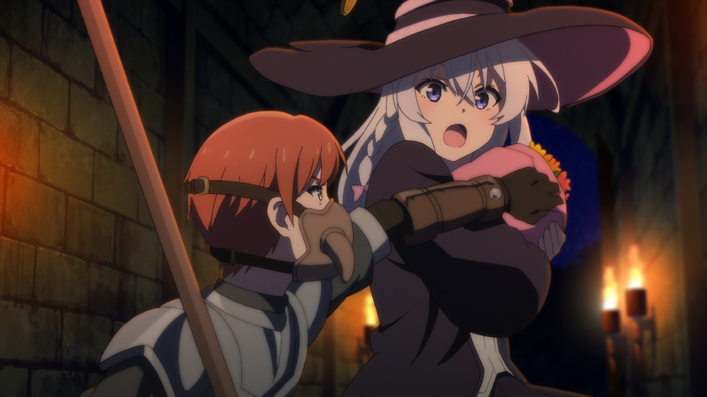
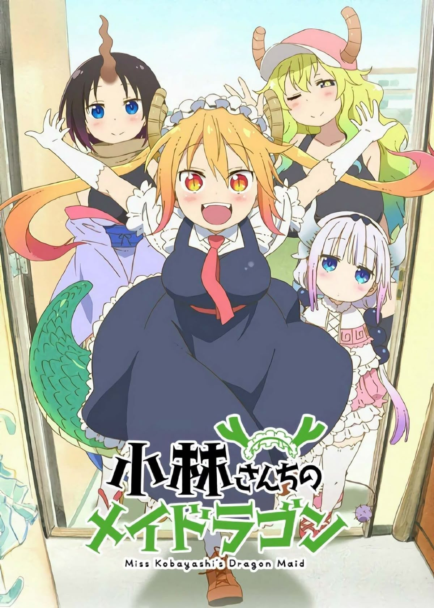
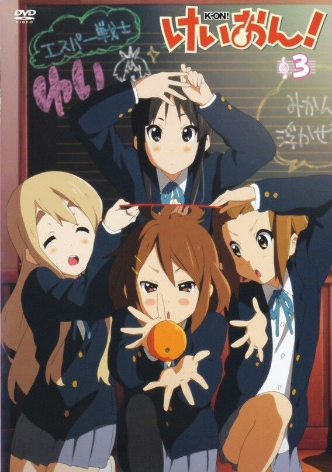
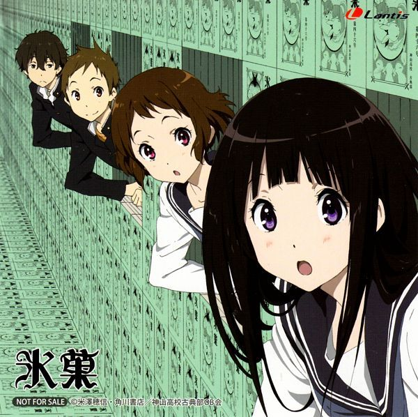
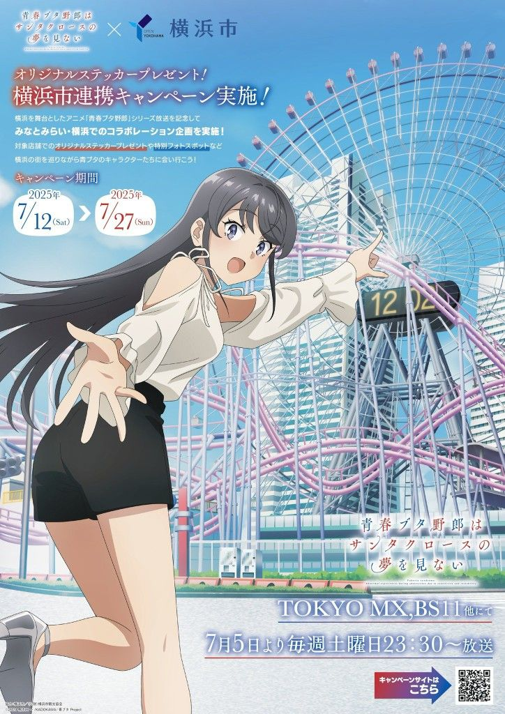

✨ 寒假追番视图

🔥魔女之旅
成长于和平国罗贝塔的伊蕾娜十分喜爱短篇小说集《妮可冒险记》，更被书中主角魔女妮可所吸引，于是立志长大后要成为魔女，像妮可一样出去周游列国。后来，伊蕾娜以十四岁之龄通过了魔术测验，但没有魔女愿意收她为徒，直至遇见“星尘魔女”芙兰才得以成为学徒。修行过后，芙兰赐予了伊蕾娜“灰之魔女”的称号，并离开了罗贝塔。 满师后的伊蕾娜得到家人的认可，开始周游列国。身为旅人的她，在漫长的旅途中，总会与形形色色的人们邂逅，接触他们的日常生活，又或是被卷入某些事件。魔女日复一日的旅程，编织出相逢与离别的故事。

败犬女主太多了
第一学期期末考试完结那天，自称“背景人物”的高中生温水和彦在家庭餐厅看着轻小说，却撞见同班同学八奈见杏菜，被青梅竹马袴田草介甩掉的失恋现场。温水被迫听八奈见吐了一番苦水，并借了钱给没钱付账的八奈见。为了还钱，八奈见提议每天为温水准备便当来抵债。以此为契机，素昧平生的两人逐渐变得无话不谈，温水也进而结识田径社的烧盐柠檬、文艺社的小鞠知花，以及其他许多的“败犬女主”。于此同时，温水原本平淡的生活也一点一滴地发生变化。

小林家的龙女仆
普通程序员小林意外收留了龙女仆托尔，与各种龙族展开温馨又搞笑的日常生活，治愈与欢乐并存。

轻音少女
围绕轻音部少女们的校园日常展开，描绘友情、成长与音乐梦想，是一部轻松治愈的青春群像剧。

冰菓
节能主义少年折木奉太郎与好奇心旺盛的千反田一起破解校园谜题，在推理中缓缓展开细腻青春物语。

青春猪头少年系列
高中生梓川咲太邂逅出现“青春期综合征”的少女们，在超自然事件中探讨青春、孤独与成长的故事。